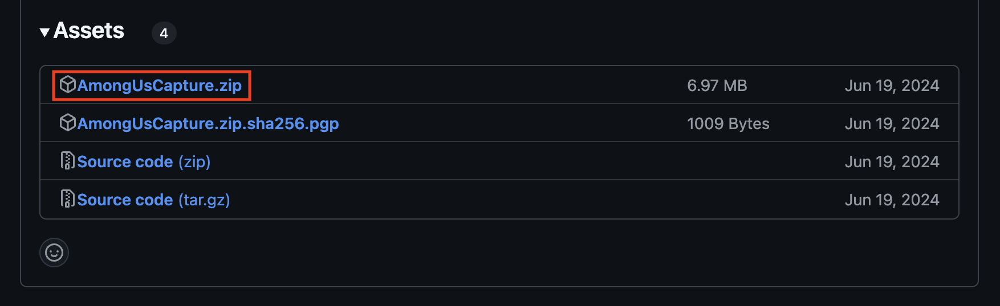
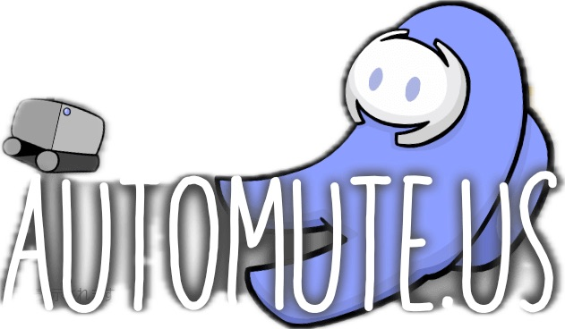
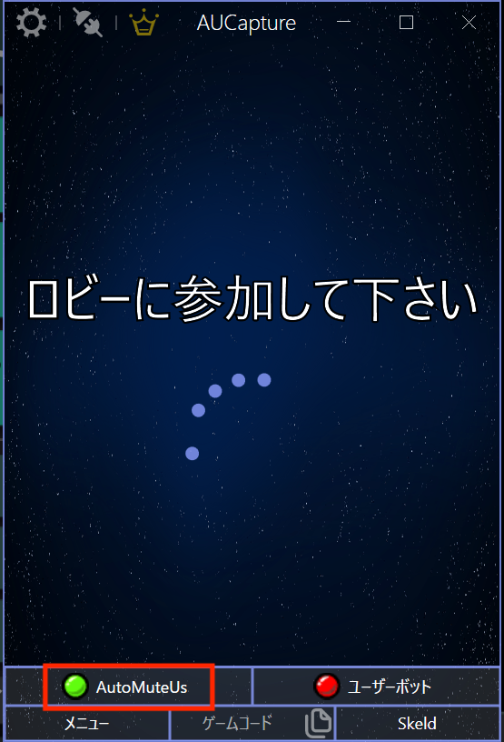
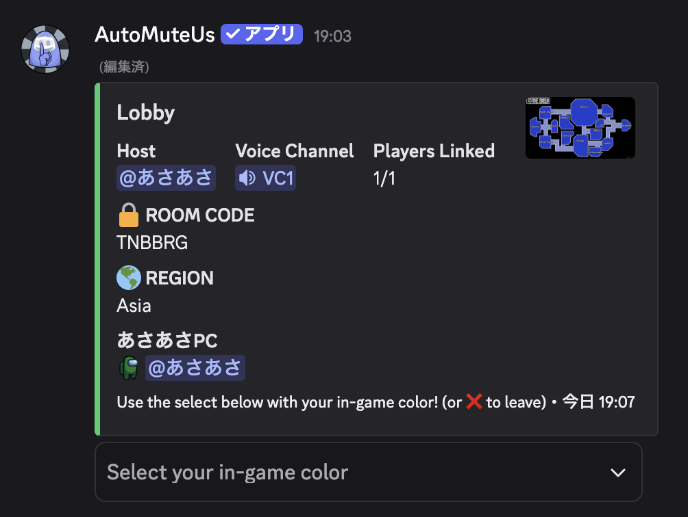

ゲームサークルあもあす班のみなさんこんにちは．あさあさです
ここではCITゲームサークル生向けにAutoMuteUsというBotとAmongUsCapture(以下，capture)というソフトウェアを用いてDiscordのボイスチャットで快適にAmong Usをプレイする方法を解説します．
Among Usはみなさん楽しんでいますか？とても楽しいゲームですが，オンラインでやるときは手動でミュートしたり死亡したら霊界チャットに移動しなきゃいけなかったり面倒ですよね．
そんな面倒な作業を自動でやってくれるBotがあります！それがAutoMuteUsです．読んで字の通り，このBotはゲームが始まったら参加者をミュート状態にして，会議とタスクで生者チャットと霊界チャットを切り替えてくれます．このサイトではそんなAutoMuteUsの使い方をご紹介します．
実際のゲーム内の状況をBotに伝えるために橋渡しとなるソフトウェアを こちら からインストールします．
上記のGithubからCaptureの最新版のzipファイルをダウンロードしてください．
ここまでの手順でCaptureをインストールできたら準備完了です．さっそくホストとして部屋を立ててみましょう
ここからはDiscordで操作します．VCに入った状態で，任意のテキストチャンネルに以下のコマンドを入力します．(一応「automuteus」チャンネルがあるのでそこに入れましょう)
コマンドを入力すると上の写真のようなコメントがBotから送られます．この状態は「BotとCaptureがまだ連携できてないよ」ということです．同期するためには，赤枠で囲ってある"here"をクリックしましょう．ブラウザーが起動し，画面にでっかく"AutoMuteUs"のロゴが出てきたら成功です．
(このロゴが画面いっぱいに表示されます．)
Discordに写真のような表示が出てこない場合，以下の点に注意しましょう．
URLをクリックしてもcaptureが起動しない場合，captureがデスクトップにないことが原因と考えられます．ダウンロードに置きっぱなしの場合は場所を移動させましょう．
それでもだめな場合はおそらくPCのセキュリティソフトが阻害している可能性があります．この場合は手動で起動させましょう．単純にダブルクリックすれば起動できます．captureはネットからインストールしたソフトウェアなので，セキュリティソフトが反応してしまうことがあります．
同期がうまく行けば，上の写真の赤枠のように緑丸がつきます．PCのスペックによっては数秒ラグがあるのでちょっと待ちましょう．
この状態でAmong Usを起動し，ゲーム内で部屋を立ててみましょう！ここまでうまく行っていれば，最初にDiscordに送られたコメントが下の写真のように変化します．
これで部屋募集ができました！